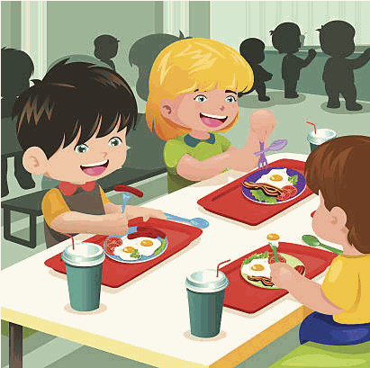

Pasti di altissima qualità, preparati ogni giorno nella nostra cucina interna.

I pasti vengono preparati ogni giorno nella cucina interna della scuola, con un servizio di altissima qualità: freschi, sani ed equilibrati, pensati per la crescita di bambini e ragazzi.
Per moduli, certificati o informazioni sui servizi, contatta la segreteria negli orari di apertura.